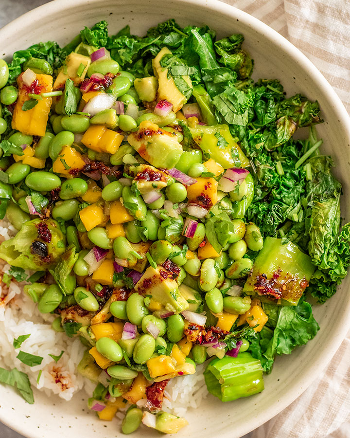

Avocado Mango Salad Bowl
Avocado Mango Salad Bowl

This Avocado Mango Salad Bowl is a recipe from plant based rd. Every single recipe of hers is amazing!
I have been making her recipes for over a year and every time it hits the spot!
PlantBasedRd Link
Ingredients
- 2 cups frozen edamame, thawed
2 ataulfo mangos, pitted and cubed
2 avocados, pitted and cubed
1/2 a small red onion, about 1/4 cup diced
1/3 cup cilantro, minced
1 lime
1 tbsp soy sauce
2 tsp maple syrup or agave
1/2 tbsp or more of chili crisp oil or 1/2 tbsp toasted sesame oil
2 cloves garlic, minced
2 cups shishito peppers or bell peppers of your choice, stems removed and roughly chopped
Oil for sauteing
Salt and pepper to taste
- To a mixing bowl add in your edamame, mango, avocado, red onion, cilantro, and the zest of 1 lime.
- Add a small sprinkle of salt and the juice of 2 limes over top along with your soy sauce, sweetener, and chili oil. Give the salad a good mix and let it sit and marinade as you prepare the shishito peppers.
- To a skillet over medium-low heat, add a splash of oil. Once warmed through, add in your garlic and sauté until fragrant. Add the peppers and continue to sauté until the peppers start to brown, about 3 minutes.
- Add a small sprinkle of salt and then add the peppers and garlic to avocado mango mix and stir to combine. Serve as a nutritious power bowl with some cooked rice, extra greens and more toppings like chili oil as desired.